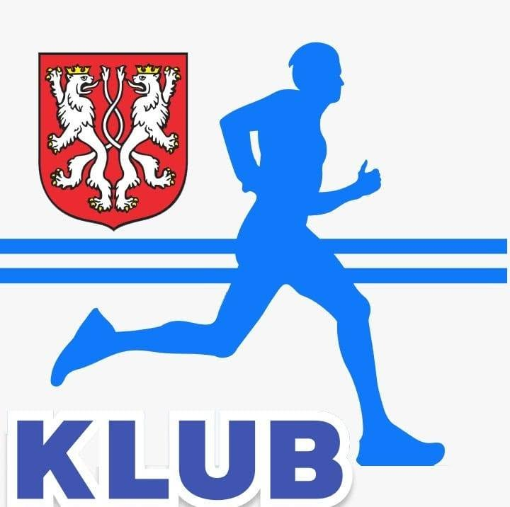

Mobilna kawa na wydarzenia
KAWANARAJD
Nie sprzedaję kawy. Tworzę miejsce, przy którym ludzie zatrzymują się choć na chwilę.
Strona nadal się rozwija, ale kawa już działa. Na Facebooku znajdziesz najbliższe wydarzenia i relacje z tych, które zdążyły przejść do historii.